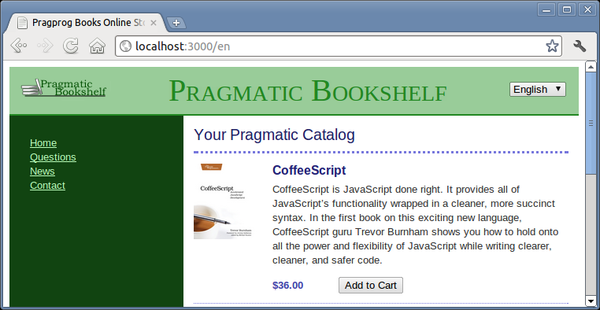

Let’s take a look once again at a simple view that we use in the Depot application, in this case, one that presents our storefront:
| rails31/depot_u/app/views/store/index.html.erb | |
<% if notice %> |
|
<p id="notice" ><%= notice %></p> |
|
<% end %> |
|
<h1><%= t('.title_html') %></h1> |
|
<% @products.each do |product| %> |
|
<div class="entry" > |
|
<%= image_tag(product.image_url) %> |
|
<h3><%= product.title %></h3> |
|
<%= sanitize(product.description) %> |
|
<div class="price_line" > |
|
<span class="price" ><%= number_to_currency(product.price) %></span> |
|
<%= button_to t('.add_html'), line_items_path(product_id: product), |
|
remote: true %> |
|
</div> |
|
</div> |
|
<% end %> |
|
This code gets the job done. It contains the basic HTML, with interspersed bits of Ruby code enclosed in <% and %> markup. Inside that markup, an equals sign is used to indicate that the value of the expression is to be converted to HTML and displayed.
This is not only an adequate solution to the problem at hand; it is also all that is really needed for a large number of Rails applications. Additionally, it is an ideal place to start for books—like this one—where some knowledge of HTML may be presumed, but many of the readers are new to Rails and often to Ruby itself. The last thing you would want to do in that situation is to introduce yet another new language.
But now that you are past that learning curve, let’s go ahead and explore a new language—one that more closely integrates the production of markup with Ruby code, namely, HTML Abstraction Markup Language (Haml).
To start with, let’s remove the file we just looked at:
$ rm app/views/store/index.html.erb |
In its place, let’s create a new file:
| rails31/depot_v/app/views/store/index.html.haml | |
- if notice |
|
%p#notice= notice |
|
%h1= t('.title_html') |
|
- @products.each do |product| |
|
.entry |
|
= image_tag(product.image_url) |
|
%h3= product.title |
|
= sanitize(product.description) |
|
.price_line |
|
%span.price= number_to_currency(product.price) |
|
= button_to t('.add_html'), line_items_path(product_id: product), |
|
remote: true |
|
Note the new extension: .html.haml. This indicates that the template is a Haml template instead of an ERB template.
The first thing you should notice is that the file is considerably smaller. Here’s a quick overview of what is going on, based on what the first character is on each line:
Dashes indicate a Ruby statement that does not produce any output
Percent signs (%) indicate a HTML element.
Equals signs (=) indicate a Ruby expression that does produce output to be displayed. This can be used on either lines by themselves or following HTML elements.
Dots (.) and hash (#) characters may be used to define class and id attributes, respectively. This can be combined with percent signs or used stand-alone. When used by itself, a div element is implied.
A comma at the end of a line containing an expression implies a continuation. In the previous example, the button_to call is continued across two lines.
An important thing to note is that indentation is important in Haml. Returning to the same level of indentation closes the if statement, loop, or tag that is currently open. In this example, the paragraph is closed before the h1, the h1 is closed before the first div, but the div elements nest, with the first containing an h3 element and the second containing both a span and a button_to.
As you can also see, all of your familiar helpers are available, things like t, image_tag, and button_to. In every meaningful way, Haml is as integrated into your application as ERB is. You can mix and match: you can have some templates using ERB and others using Haml.
As you have already installed the Haml gem, there truly is nothing more you need to do. To see this in action, all you need to do is to visit your storefront. What you should see should match Figure 54, Storefront using Haml.
|  |
|
Figure 54. Storefront using Haml |
If that looks unremarkable, that’s because it should look exactly like it did before. And that, if you think about it, is all the more remarkable as the application layout continues to be implemented as a ERB template and the index itself is implemented using Haml. Despite this, everything integrates seamlessly and effortlessly.
Although this clearly is a deeper level of integration than simply adding a task or a helper, it still is an addition. Next, let’s explore a true replacement.